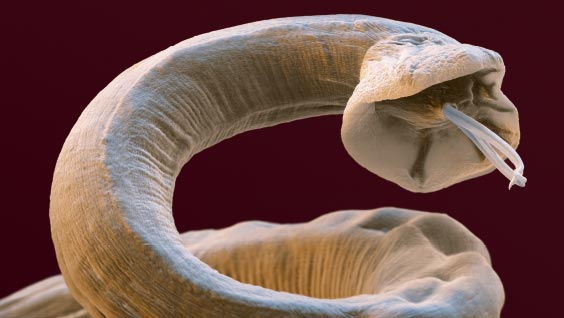

80% gadījumos no visām saslimšanām izraisa parazitārās infekcijas. Kā nekļūt par helmintu barību?
Saslimšana ar parazītiem var izraisīt visa slimību spektra attīstību: diabēta, hipertonijas, dažādu vēža veidu, neauglības un daudzu citu. Iemesls ir tas, ka parazītu dzīves atliku produkti satur toksīnus, kas izraisa imūndeficītu – ziņoja oficiālie Pasaules Veselības Organizācijas pārstāvji, tiekoties ar žurnālistiem 2023. gada 25. decembrī.
Par parazitāro infekciju saistību ar dažāda veida slimībām pastāstīja profesors, medicīnas zinātņu doktors, ogs Ilmārs Sprūde.
Šodienas sarunas tēma ir nedaudz neparasta, bet no tā ne mazāk svarīga. Bez liekiem vārdiem minēšu oficiālo statistiku:
-
• Pasaules veselības organizācija ziņo, ka no dažādām parazitārām slimībām cieš apmēram 4,5 miljardi cilvēku – tas ir vairāk nekā 60% pasaules iedzīvotāju
-
• Katrs trešais eiropietis ir inficēts ar parazītiem
-
• Katru gadu no parazitārajām infekcijām mirst 15-17 miljoni cilvēku
-
• Helmintiāze ir trešā izplatītākā slimība pasaulē
Tātad, ar lielu varbūtību, jūsu organismā mitinās parazīti. Bet, pat ja nemitinās, iespēja inficēties ir ļoti liela.
 Zarnu askaridoze
Zarnu askaridoze Apaļtārpi
Apaļtārpi
Dzīvs organisms nav spējīgs izdzīvot bez silīcija – tas ir zināms fakts. Tad kā vairojošies organismā parazīti, pirmkārt, sāk ēst silīciju. Un bez silīcija, kalcijs – kaulu celtniecības materiāls – pārstāj absorbēties. No šejienes – radikulīts, osteohondroze, poliartrīts.
 Trihomonāda
Trihomonāda
Bet pats interesantākais atklājums oģijā tika veikts 1989. gadā un ir ieguva nosaukumu Trihomonādas īpašība pārdzimt audzēja šūnā. Izrādās, vēzis ir slimība, ko izraisa parazīti. Un galvenais audzēju provocētājs ir trihomonāda.
Tādējādi visu slimību izraisītāji ir vienšūņi, sēnītes un helminti.
Liekais svars un helminti ir neapvienojami, domājat jūs? Nu ja. Priekš cilvēkiem, kas inficēti, piemēram, ar lentes tārpiem, tauki kļūst par vienīgo aizsardzību pret toksisko iedarbību.
 Delfīna smadzenes delfīnu,
kas inficētas ar parazītiem. Domājat, cilvēkiem tā nemēdz būt?...
Delfīna smadzenes delfīnu,
kas inficētas ar parazītiem. Domājat, cilvēkiem tā nemēdz būt?...
Mūsu laikos, gandrīz katram pilsētas iedzīvotājam organismā dzīvo vai tārpi, vai sēnītes. Ja viņi ir praktiski katram, tas nozīmē, ka tā ir norma?, - jautāsiet jūs? Nē, ne norma!
Mēs, ogi, jau sen ceļam trauksmi. Galvenā problēma ir līdzekļa, kas varētu iznīcināt visus iespējamos cilvēka parazītu veidus, pie tam nekaitējot pašam cilvēkam, trūkums.
Burtiski pirms dažām dienām beidzās pēdējie jaunā līdzekļa klīniskie pētījumi. Un es jau ar pārliecību varu teikt, ka tas ir sasniegums parazitāro infekciju ārstēšanā. Papildus pilnai sanācijai, parādīja lieliskas blakusparādības, tādās kā organisma attīrīšana no šlakvielām un toksīniem, labvēlīga ietekme uz kuņģa-zarnu trakta orgāniem, žults atteces stimulēšana, atbrīvošanās no čūlas, gastrīta un daudzām hroniskām saslimšanām; ādas, matu, nagu stāvokļa uzlabošanās; izkārnījumu normalizēšana; atbrīvotošanās no alerģijām.
Komentāri:
Komentēt